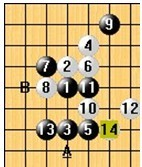

小天老师讲先手理念（一至三）
#1 小天老师讲先手理念（一至三） 作者：uniwin 发表时间：2010-4-16 10:41:14
小天老师讲先手理念之一：先手与反先手的初步认知
先手的概念
应该说“先手”这个概念运用范围很广，并不局限于五子棋，围棋象棋也有这样的说法。然而“先手”运用范围虽然广，却没有统一的定义，概念。很多人都自己对“先手”独特的理解，假如让10位老师分别来讲先手，恐怕10种说法不尽相同，但是大家又能发现他们都是在描述同样的东西。这里我不打算介绍我对“先手”的理解，只是希望能起一个引导的作用。
虽说“先手”的具体概念并不统一，但各种说法都包含同一个共性——认为有先手意味着“不得不管”。这样的理解也包括围棋象棋（比如围棋里的“打劫”，象棋的“将军”）。
那么什么是五子棋的“不得不管”呢？
最简单直观的形式，就是冲4要拦，如左图，黑冲4，白此时必须挡9上边，不能自己活4，否则黑棋5连，这就是“不得不管”。
另一种简单直观的形式，就是活3要挡，如左图，黑活3，此时白必须阻挡在黑棋活3的上下两端*之一，不能自己活3，否则黑棋将活4取胜。
除此外白棋特有的抓禁也能实现“不得不管”的效果。
我以前读过些历史故事，曾看过一段介绍孙膑的话，我引用给大家：孙膑在作战中运用避实击虚、攻其必救的原则，创造了著名的“围魏救赵”战法，为古往今来兵家所效法。“避实击虚、攻其必救”这条原则非常重要，这条原则是实现“不得不管”效果的基础。围棋如此，象棋如此，五子棋也如此。试想如果你对对方的攻击不疼不痒，虚无缥缈，那换来的肯定是对方肆无忌惮的反击。（有兴趣的话可以自己搜索“攻其必救”这词）
什么叫不痛不痒，虚无缥缈的攻击呢？举例如上面左图白棋第4手的进攻，后面无法保持连续攻击，伤不着黑棋分毫，黑棋就可以直接“不管”。
现在我们讲一个非常常见且非常基本的进攻模式。如上面左图，当黑棋有多个活2时，白棋经常不能自己做棋反击(除非能形成VCF或牵制住黑棋所有VCT线路)，如果白棋走类似这样的10，那么黑棋往往简单必胜。大家可以把这个结论当成种普遍现象，它就是上文所述内容的简单衍生，改进。这点对于新手来说很重要，希望记住。
反先手
与先手相对应的，就是“反先手”。其实反先手这个概念非常简单直观，但随着五子棋技术的进步，对“反先手”的概念观点也出现比较大的分歧。跟先手类似，不同人谈反先手内容都不大一样，但大家依然能发现他们其实都在描述相同的东西。
其实呢，反先手的最初含义非常非常简单。
上文的“先手”提到，黑冲4时候一般白棋是不能跟着冲4（或活4）的，但也有例外，比如左图，黑冲4时候白也跟着冲4，这就是反先手。

同理，黑活3时候一般白棋是不能跟着活3的，但同样有例外，比如左图，黑活3时候白也跟着活3，这也是反先手。
特殊的白棋可以利用抓禁来反先手，但总体而言，反先手最初的意思主要指反冲4及反活3（不能局限于这两种反先方式）。
那么，既然反先手含义这么简单，为什么会出现分歧呢？我举几个例子，希望大家细心体会其中区别。
有时候反先可以必胜的，即便白换其他走法，黑依然必胜，这时几乎所有观点都同意称之为牵制。
特殊的黑进攻时被白牵制通常称为反杀。
#2 小天老师讲先手理念之二-先手需要做到的 作者：无尽 发表时间：2010-4-16 12:40:11
1、对方的反击：有时候没有或者无用，或作用可以忍受，这些是最容易处理的；有时候是不法忽略，甚至致命的，这时，有些稍微限制即可，有些需要速度提升保障，有的需要提前绕道或压制。 2、实现一个好的形状还是比较容易做到的，选点范围会比较广。 但符合2同时符合1的点，就不见得那么多了。 根据不同的对手反击程度，大致分9种方式：（1）乘机做棋，无视反击做棋
8手是一个强防，L7是局部的强防，但是白棋没有太多反击的东东。现在这个情况黑棋的先手很好的掌控，G6是很积极进攻点，如果16防在J5做一子三通，黑棋可以连攻胜。这是第一种情况当白棋没有反击的时候，黑棋的先手可以简单的做棋进攻。
空恨大师发现在经典的做棋。黑棋利用白棋没有反击能力，拓展的妙手。上图15手连接1-11-13，又与11手连接的好点，这样交换后黑棋有一个非常漂亮的进攻形状。
（2）简单干扰
花月的骗招。如果黑棋这手棋直接挡他的活二，虽然可以在下面取胜，但是比较麻烦，现在黑棋可以有更好的走法。因为白棋没有连攻，所以可以不用理会白棋，自己做棋就行现在这个例子，白棋有一个活二。黑棋怎么样能控制先手和保持良好的进攻形状呢？白棋虽然是活二，但是干扰性不大。如果黑J6资源浪费。可以可以走在L5或者这个K5
这个15手，可以自己试着摆一下，在局部做一个漂亮的棋形，象锐角等角三角形，很多时候都会有这样的做棋。15手又与1手形成跳二，又与5-9-11手有潜在的连接，17手连攻后取胜。见上图。这是第二种情况白棋有一点小反击的时候。因为没有连攻黑棋可以继续做棋。（3）因势利导再看一个例子 。斜月弱六的一个变化
11手如果下在9手或者5手的右两格牵制的走法，但是不是很好。看下图
如果黑棋走在Ｅ７，表面上不错，这个情况白棋强防后，黑棋陷入一个尴尬的局面，白棋有反牵制。可以想一下有更好的走法。现在这个十一手才是最有效的掌控先手的棋，上面已经是必胜形了，经常会遇到这样的行棋手法。记住这样的行棋思路。再看一个例子。
黑11手为什么不下在I10而下在 I11呢，是因为4与10的活二，黑棋可以顺势挡在外围，从而达到了对先手的掌控目的。
现在这个八手也可以说是一个强防，9手可以说是一个掌控先手的一个妙手，最简洁的必胜走法。同刚才的一个十五手。
先手的另外一种思路，这个九手欺负白棋攻不下来。相当于等招的手法。同样的必胜方法，欺负白棋攻不下去，在局部做一些漂亮的形状。再看另外一种方法
这里讲的是白棋的反击和纠缠不可忽略，17手如果下这里，18手是最强防，不管只接在I5做棋，还是先在F9挡，白棋都能很破坏掉黑棋的形状。所以这个十七手无法摆脱白棋的纠缠。17手换在J6才是正确的。再讲一个白棋反击不可忽略的例子
（4）牵制
7手和11手都是先手牵制的走法，等招 这手I9也是黑棋有趣的必胜点。八卦点。。。。。
9手同样牵制的走法 （5）提前压制对于白棋的反击黑棋可以用牵制或者压制的方法。
#3 小天老师讲先手理念三：时下流行的反先手思想 作者：小帮帮 发表时间：2010-4-16 14:04:51
通过例子介绍时下流行的反先手思想（简单复习最初反先手的内容） 最早的反先手只是单纯的反活3，反冲4，然而伴随着研究过程中不断深入，反先手的观念思想也开始衍变发展进步，并与先手思想相互补充融合。为什么反先手会发生衍变呢？ 先手方会有意识的对付反先手，所以实际操作中反先手很难真正实现它原本的作用。如2图，反先手实际上起到限制对方走A点的作用而不是起反先作用。 现代反先手：跟先手一样，反先手技术并没有统一公认的观点，总体上说反先手思想不再是单纯的反先，而是利用潜在的反先手作用逼迫先手方放弃一些选点。反先手的实际能发挥什么作用通常依赖先手的选择。前文提到，先手的理论流派很多，但总体上都兼顾2方面，一是保持先手；二是组织棋形。然而反先手的参与给先手的控制造成一定麻烦，使两方面的不容易兼顾，在实际操作中容易出现倾斜。当具备一定反先手能力时，反先手的作用在实战中随先手策略一般有2种具体表现：1、当先手方侧重于组织棋形、放松先手保持时，利用反击破坏形状；2、当先手方侧重于保持先手、放松棋形组织时，它本身已经迫使先手方放弃一些良好的形状，退而求其次。注意，强调：1、先手与反先手没有孰优孰劣的说法，实战中哪方能获胜由局面客观决定，跟人提出的理论无关；2、这里分析是比较常见的2种表现，有时候会遇到比较难分析的反先作用，不好分析反先到底发挥什么作用，但能发现先手方不好受； 3、拆棋时候其实还是更注重先手，反先手相对并没有获得太多的关注。对比26手在A、B的区别，虽然26A不可能起到真正意义上的反先作用，但它对右边黑棋进攻带来不可忽略的麻烦。
19手追求形状，放松先手。大家有兴趣可以分析看看白棋能在左下做些什么?
单纯从进攻角度，其实A点进攻性状比B点好得多，但为什么定式只能选择B点不能选择A点呢？ 这就是反先手作用的第2种表现——迫使对方退而求其次。当然B点其实也挺追求棋形的，这又出现反先手作用的第1种表现。打个不是很恰当的比方，假设这边多了这样的15、16手，使该17后白反先手不成立，将发现黑棋速胜。进攻时叫牵制，防守时叫纠缠，有时也叫先手交换。上图9手过于追求形状，放松先手。反先手作用表现。上图，另一种形式的反先作用表现上两图，斜月定式2个经典的先手防。上图，山岚的经典3大强防14，无论哪一个，都能迫使黑棋放弃13右下那一子通3路的好点。上图，暴力反先手方式，是复杂表现方式1，逼迫黑棋自毁形状---下边唯一上图，新月经典唯一防18上图，暴力的反先手方式。比较难分析上图，怪异的反先手干扰，黑棋意外的尴尬的不好攻上图，银月定式，利用抓禁搞得先手方形状难受。上图，不好分析的反先手现象之一。或许可以归为自然反，这个形状11手本来应该是很正常的选择，但这个形状经常在这个12位置出现诡异强防。我们发现在12，2这条线常出现难以忽略的反先。 另一类特殊的反先手：自然反。它通常不具备与先手方争夺先手的能力，只具有破坏进攻形状的能力，在某些时候破坏能力还特强。 上两图，自然反 从统计学上讲，反先手的威胁程度与先手方的发觉时机时机有关，越晚发现威胁往往越大，反之然。拆棋的过程#4 Re:[转帖]小天老师讲先手理念 作者：岑小鱼 发表时间：2010-4-16 17:14:23
无图 不知道在侃哪座大山
#5 Re:[转帖]小天老师讲先手理念 作者：笑雨辰 发表时间：2010-4-16 23:38:32
无图无真相。。#6 Re:[转帖]小天老师讲先手理念 作者：一心弈路 发表时间：2010-4-19 18:05:50
无图 求原帖地址
=======上图对应的爱五子棋谱代码如下，以便你拆解：========
a15f12a14e11a13e10a12e9b12f8c12g9l14g10k15g11j15l13i14d5i13c6j12b6k11a5l10a4m11b3n12c2o13d1o14e2n15f3m15g4d4g5i8f6i7e6i6o1j5n1k6m2k7m3k8m4n3n5o3o5
======================================================
#7 Re:[转帖]小天老师讲先手理念 作者：uniwin 发表时间：2010-4-20 8:33:01
不知道怎么回事，贴图未成功，现将原文件弄到word里面，压缩后上传了，见附件。请斑竹帮忙弄成一个压缩文件里面，放到1楼吧
 小天老师讲先手理念.part01.rar
小天老师讲先手理念.part02.rar
小天老师讲先手理念.part03.rar
小天老师讲先手理念.part04.rar
小天老师讲先手理念.part05.rar
小天老师讲先手理念.part06.rar
小天老师讲先手理念.part07.rar
小天老师讲先手理念.part01.rar
小天老师讲先手理念.part02.rar
小天老师讲先手理念.part03.rar
小天老师讲先手理念.part04.rar
小天老师讲先手理念.part05.rar
小天老师讲先手理念.part06.rar
小天老师讲先手理念.part07.rar
［此帖子已被 uniwin 在 2010-4-20 8:35:02 编辑过］
［ 黄药师 于 2010-4-21 10:59:57 时奖励此帖[金币加 20 威望加1］
#8 Re:小天老师讲先手理念（一至三） 作者：岑小鱼 发表时间：2010-4-21 23:40:05
终于看到图片了 好贴哈
虽然有个别变化意见不一样 不过总体都说的很好 顶一个 
#9 Re:小天老师讲先手理念（一至三） 作者：怪 发表时间：2010-4-22 21:19:43
写的很用心的一篇文章。#10 Re:小天老师讲先手理念（一至三） 作者：雨碎红尘 发表时间：2010-4-23 13:21:26
 学习
学习
#11 Re:小天老师讲先手理念（一至三） 作者：uniwin 发表时间：2010-4-24 22:14:48
谢谢有志斑竹帮我修正图片的问题
原图无坐标，重新排了一下版加上坐标，现在的图片看起来顺眼多啦，由于采用了微软wmf格式的矢量图片，文章的体积也小了很多很多！


［此帖子已被 uniwin 在 2010-4-24 22:42:29 编辑过］
#12 Re:小天老师讲先手理念（一至三） 作者：岳麓小棋后 发表时间：2010-4-27 0:12:47
 有空认真学习
有空认真学习
#13 Re:小天老师讲先手理念（一至三） 作者：安娜制作所 发表时间：2010-4-28 14:35:42
写得很棒,偶最喜欢WORD版的,能传一个给我吗?辛苦楼主了,谢谢!
QQ:774698435
#14 Re:Re:小天老师讲先手理念（一至三） 作者：uniwin 发表时间：2010-4-29 8:50:54
引用：word版在11楼
原文由 安娜制作所 发表于 2010-4-28 14:35:42 :写得很棒,偶最喜欢WORD版的,能传一个给我吗?辛苦楼主了,谢谢!
QQ:774698435
#15 Re:小天老师讲先手理念（一至三） 作者：秋叶散人 发表时间：2010-4-29 10:07:55
此文之精要，乃前所未见！吾将反复习之，但求领悟其精髓。
——在此向小天老师和uniwin五子学徒以及有志版主表示敬意！
［此帖子已被 秋叶散人 在 2010-4-29 10:18:44 编辑过］
［ 有志青年 于 2010-5-2 12:19:56 时奖励此帖[金币加 20 威望加1］
#16 Re:小天老师讲先手理念（一至三） 作者：厦小三 发表时间：2010-5-4 11:43:00
支持一下
回来请吃饭~~~
#17 Re:小天老师讲先手理念（一至三） 作者：用心学习 发表时间：2010-5-4 20:55:41
谢谢老师，收益匪浅啊！#18 Re:小天老师讲先手理念（一至三） 作者：雪飞 发表时间：2010-6-29 13:32:21
请问下：“第二讲 （6）直接处理反击 ”，这部分是否缺图？理解起来吃力。
附：五子茶馆整理版小天教程，网址连接：http://www.5zq.net/c/daixiaohan.html
#19 Re:小天老师讲先手理念（一至三） 作者：蝶影随风 发表时间：2010-6-29 17:00:16
前三楼貌似更像我空间整理的 ．．．
．．．
#20 Re:小天老师讲先手理念（一至三） 作者：高斯 发表时间：2011-2-21 23:37:54
太深入了
学习
非常感谢
#21 Re:小天老师讲先手理念（一至三） 作者：死劲哭 发表时间：2011-7-3 22:53:52
再次进来学习，领略真大师的风采#22 Re:小天老师讲先手理念（一至三） 作者：隐藏菜系 发表时间：2011-7-4 9:06:26
楼上，还有假大师？是谁呀？